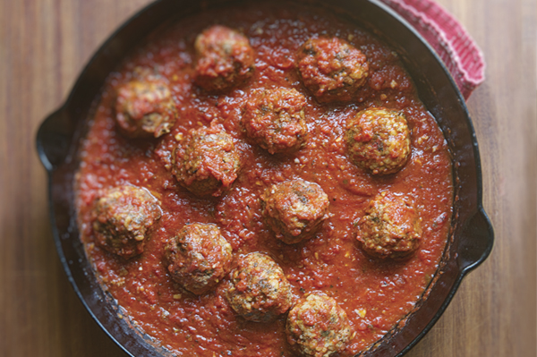

Chipotle Meatballs

Chipotle Meatballs are a spicy and flavorful twist on traditional meatballs
The combination of ground meat, chipotle peppers, and savory spices creates a zesty and satisfying dish that's perfect for a weeknight dinner or a special occasion.
Ingredients
- 1 pound ground beef
- 1/2 pound ground pork
- 1/2 cup breadcrumbs
- 1/4 cup finely chopped onion
- 2 cloves garlic, minced
- 2 chipotle peppers in adobo sauce, minced
- 1 teaspoon ground cumin
- 1/2 teaspoon dried oregano
- 1/2 teaspoon salt
- 1/4 teaspoon black pepper
- 1 egg
- 1/4 cup chopped fresh cilantro
- 1/4 cup milk
- 1/2 cup shredded cheddar cheese
- 1 (14-ounce) can crushed tomatoes
- 1/2 cup chicken broth
- 1/2 cup heavy cream
Steps
-
Prepare the Meatball Mixture:
- In a large mixing bowl, combine the ground beef, ground pork, breadcrumbs, chopped onion, minced garlic, minced chipotle peppers, ground cumin, dried oregano, salt, and black pepper.
- Add the egg, chopped cilantro, milk, and shredded cheddar cheese to the mixture.
- Use your hands to gently mix everything together until well combined.
-
Form and Cook the Meatballs:
- Preheat your oven to 375°F (190°C).
- Shape the meat mixture into golf ball-sized meatballs and arrange them on a baking sheet lined with parchment paper.
- Bake the meatballs for about 20-25 minutes or until they are cooked through and browned on the outside.
-
Prepare the Chipotle Sauce:
- In a separate saucepan, combine the crushed tomatoes and chicken broth.
- Add the heavy cream and bring the mixture to a gentle simmer.
- Stir in additional minced chipotle peppers for extra spiciness, if desired.
- Season the sauce with salt and pepper to taste.
-
Simmer Meatballs in the Sauce:
- Gently place the baked meatballs into the chipotle sauce.
- Simmer the meatballs in the sauce for 10-15 minutes, allowing them to soak up the flavors.
-
Serve:
- Serve the chipotle meatballs with the sauce over cooked rice, pasta, or as a filling for sandwiches.
- Garnish with extra cilantro, if desired, and enjoy your spicy and delicious chipotle meatballs!